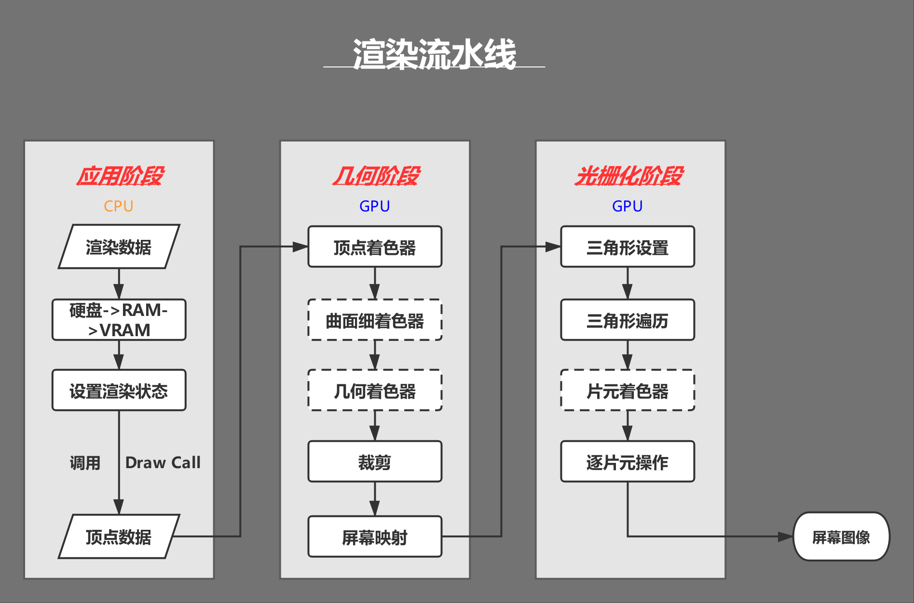
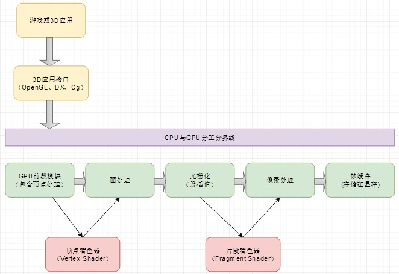
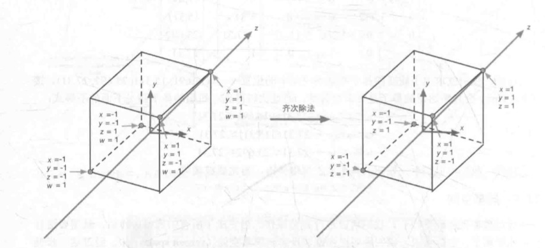
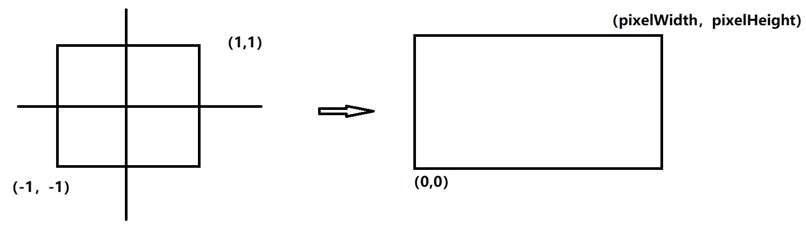
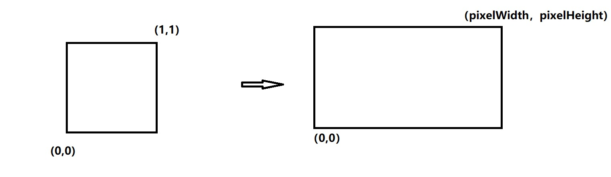

渲染管线概览
基本概念
渲染管线（流水线）
《Render-Time Rendering Third Edition》一书中将计算机图形渲染的流程划分为3个阶段

定义：也称渲染流水线，是显示芯片内部处理图形信号相互独立的并行的处理单位。
一个流水线是一序列可以并行和按固定顺序进行的阶段。也就是说每个阶段都是从它的前一阶段输入，然后输出发给随后的阶段。
渲染机理：将图像所具备的图形信息（顶点、纹理、材质、摄像机位置等）经过一系列阶段的处理，最终转换成屏幕上的图像。
实质是输入3D模型，输出2D图片显示出来的过程
渲染过程中的坐标转换：物体空间->世界空间->观察空间->裁剪空间->屏幕空间
Shader
此处的Shader区别于Unity Shader文件
Shader（着色器），是一种较为短小的程序片段，用于告诉图形硬件如何加速输出图像，过去是有汇编语言来编写。
总而来说，Shader是可编程图形管线的算法片段
分类:
- Vertex Shader
- Fragment Shader

物体空间->世界空间->观察空间->裁剪空间->屏幕空间
Shader和材质、贴图的关系：
Shader将顶点数据以指定的方式和贴图或者颜色组合起来，将输出数据绘制到屏幕上。
材质就是将Shader以及输入参数（包括贴图）打包存储起来，将材质赋予到三维物体上进行渲染
这样就是说材质就是引擎最终使用的商品（每个渲染的物体都需要一个材质）
Shader就是生产这种商品的加工过程或方法，贴图就是商品材料之一。
三个阶段
应用阶段 Application Stage
目标： 准备渲染所需的几何信息，即渲染图元（rendering primitives）
渲染数据：
- 场景数据
- 粗粒度剔除
- 渲染状态
基本流程：
- 加载数据到显存
- 设置渲染状态
- 调用DrawCall
几何阶段 Geometry Stage
接受数据： 应用阶段所准备好的渲染图源信息，也就是顶点数据（模型自身坐标系、顶点颜色、纹理UV等）
目标： 决定所需绘制图元的信息（绘制方法、绘制坐标）
基本流程：
顶点着色器(Vertex Shader)：
对每个顶点均调用一次。
通过一系列的坐标转换，将模型的顶点在摄像机前进行位移，并最终投影到摄像机的投影屏幕上
本地坐标系->世界坐标系->观察坐标系->投影坐标系
顶点处理这个阶段包括顶点的坐标变换、逐顶点雾化、材质属性、光照属性处理
曲面细分着色器(Tessellation Shader):细分图元
In Direct3D 11 pipeline (a part of DirectX 11), the graphics primitive is the patch.[4] The tessellator generates a triangle-based tessellation of the patch according to tessellation parameters such as the TessFactor, which controls the degree of fineness of the mesh.
Tessellation: 棋盘型布置，密铺，曲面细分
几何着色器(Geometry Shader):逐图元着色操作或是生成新的图元(减少CPU负担)
裁剪(Clipping): 裁剪去不在摄像机视野内的顶点（视域体裁剪）
屏幕映射(Screen Mapping):将图元的x和y坐标转换到屏幕坐标系(不对z坐标处理)
光栅化阶段 Rasterizer Stage
光栅化：是把顶点数据转换为片元的过程，具有将图转化为一个个栅格组成的图象的作用，特点是每个元素对应帧缓冲区中的一像素。（将以向量为基本结构的面转换为一个个点阵形式的像素。）
经过三角形设置，三角形遍历等操作生成一系列片元，片元着色器对每个像素调用一次片元着色函数，
进行纹理采样,计算光照等操作，最终输出屏幕图像。
接受数据： 几何阶段准备好的顶点信息
目标： 对几何阶段传递过来的屏幕空间的顶点信息进行处理,最终生成屏幕像素,渲染出图像
基本流程：
三角形设置(Triangle Setup): 根据几何阶段传递的数据(三角网络的顶点),计算三角网络每边的数据信息
三角形遍历(Triangle Traversal):工作:根据三角形设置的结果,判断某个三角网格所覆盖的像素,并根据三个顶点的信息对整个覆盖区域进行 插值 ,生成一系列 片元(fragment) ，片元包含信息有:屏幕坐标、深度、法线、纹理…
片元着色器(Fragment Shader): 又称像素着色器(Pixel Shader)
调用次数:一个像素点调用一次工作:纹理采样,计算光照(阴影、明暗…)
逐片元操作(Per-Fragment Operations):
工作:模板测试->深度测试->混合->颜色缓冲区
这一阶段包括对每个像素区域进行着色、对像素贴上贴图、形成最终的画面（输入像素的位置、深度、贴图坐标、法线、切点、颜色等；输出每个像素的颜色和透明度）
CPU与GPU
CPU在内存中建立以下资源
- 顶点定义
- 顶点缓存
- 索引缓存
- 贴图
- 摄像机
- 投影
CPU从内存中发送以下资源到显存中供GPU使用
- 顶点定义
- 顶点缓存
- 索引缓存
- 贴图
- 坐标系变换矩阵
- 渲染状态
- 贴图采样方式
GPU渲染管线理解

数学相关具体处理过程
相关概念
视锥体（view frustum）
frustum(截头锥体)
坐标转换过程
物体空间(object space)->世界空间(World Space)->观察空间(View Space)->裁剪空间(clip space)->屏幕空间(Screen Space)
NDC(Normalized Device Coordinate)归一化设备坐标
在这一步会进行一个叫齐次除法的步骤，说白了就是各个点（x,y,z,w）会除以w的值（注：计算机图形学中经常使用四元数代表一个点，叫齐次空间，齐次点等 ）

屏幕空间（Screen Space）
pixelWidth:屏幕横向分辨率
pixelHeight:屏幕纵向分辨率
OpenGL规范

DirectX规范

screenx={clipxpixelWidth/(2clipw)}+pixelWidth/2
screeny={clipypixelHeight/(2clipw)}+pixelHeight/2
Vertex Shader & Fragment Shader
顶点着色器
将物体从物体空间->世界空间->观察空间->裁剪空间就是顶点着色器的工作。
- 将物体空间的数据（点）作为顶点着色器的输入
- 将所有在自己范围中的点全部遍历一遍，就是每个点都会算进行加工
- 高度可编程配置！
片元着色器
将裁剪空间中的点从裁剪空间->屏幕空间就是片元着色器的工作。
片元着色器会返回一个四元数-（r,g,b,a）->分别为（red<红>，green<绿>，blue<蓝>，alpha<透明度>）
- 将裁减空间的数据（点）作为片元着色器的输入
- 将所有在自己范围中的像素全部遍历一遍（三角遍历Rasterizer—-Triangle Traversal），就是每个片元（像素）都会运算进行加工。
- 高度可编程配置！
Shader
简单的Shader Demo
1 | Shader "Test/Shader" |
接口与实现
UnityObjectToClipPos()
1 | inline float4 UnityObjectToClipPos(in float3 pos) |
unity_ObjectToWorld是物体空间到世界空间的转换矩阵mul()矩阵乘法内置函数。
UNITY_MATRIX_VP（观察空间和裁剪空间合一起了），乘完后将从世界空间变换到裁剪空间。
完全手动自定义计算的话，这么写：1
2
3
4
5
6
7
8float4 UnityObjectToClipPos(in float3 pos)
{
float4 objectSpaceData = float4(pos, 1.0f);
float4 worldSpaceData = mul(unity_ObjectToWorld, objectSpaceData);
float4 viewSpaceData = mul(UNITY_MATRIX_V, worldSpaceData);
float4 clipSpaceData = mul(UNITY_MATRIX_P，viewSpaceData );
return clipSpaceData;
}
Ref
https://www.cnblogs.com/SouthBegonia/p/11564407.html
https://blog.csdn.net/AvatarForTest/article/details/80438344
http://m.elecfans.com/article/713834.html

...
...
This is copyright.